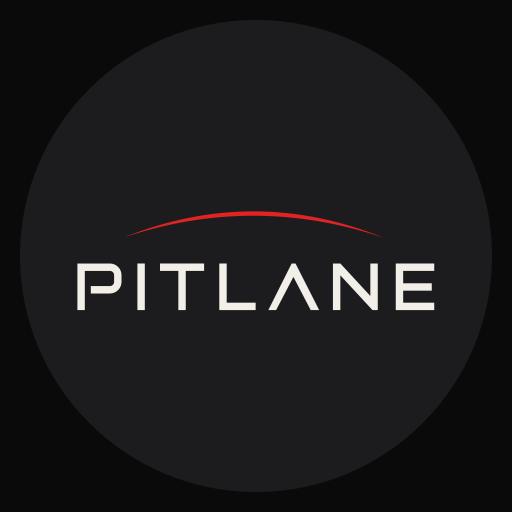

Знак — геометрический (Λ без перекладины, открытая чаша P), буквы #f2efe9, дуга — красная #e12323 (плоская, без свечения; красный в системе — только эта дуга и дельты), без градиента и свечения. Файлы: img/logo/pitlane-logo.svg (дуга + знак), pitlane-wordmark.svg, pitlane-icon.svg (круг на #0a0a0a).
Цвет
#000#0a0a0a#121212rgba(255,255,255,.08)#f5f5f5#8a8a8argb(201,198,191)#7fae8f#d0675c#e12323Типографика · Inter (OFL) · PL Sans / PL Num, табличные цифры
Кнопки
Выбор и приборы
дельта к лучшему · прогноз 2:17.04
Строки списков
Сетка 8 · радиусы
Правила
Без карточек. Блоки разделены волоском 1px и воздухом 24/32 px; рамка — только у выбираемого (трасса, товар-фото).
Цифры — главные. Крупно и легко (200–300), подпись — под цифрой, трекинг-капсом 11 px.
Один акцент. Мятный — только состояние «активно»: вкладка, выбор, «ты» в таблице, живой GPS. Зелёный/красный — только дельты.
Без декора. Нет градиентов, теней, свечения; размытие — только у шапки, панели и шторок (чтобы читалось поверх контента).
Движение. 200 мс, cubic-bezier(.2,0,0,1), только fade/slide; при «уменьшить движение» — без анимаций.